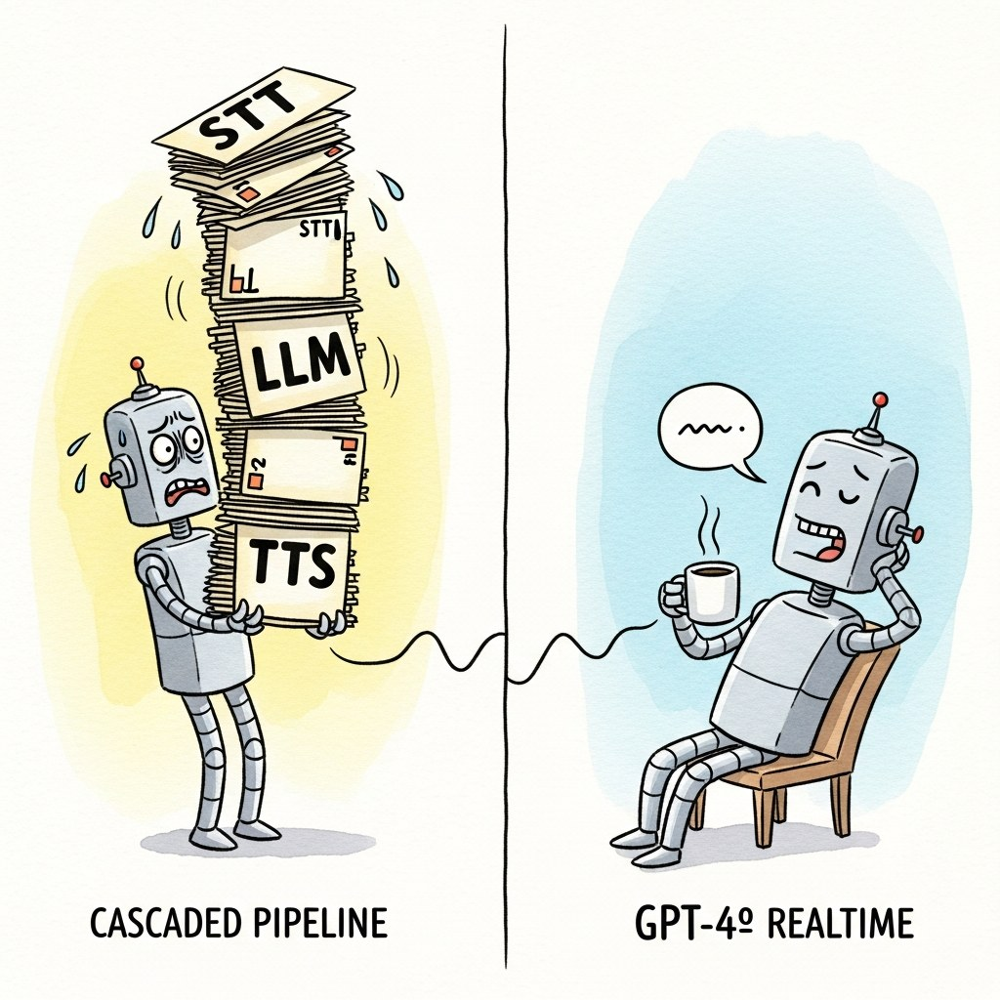

"Frontier chat models all sound the same after the third turn; the differences are vibe, voice, and who you trust with your logs."
Lexica, Brand-Indifferent Conversational AI Agent
The "conversational model" landscape in 2026 splits four ways: frontier chat-tuned APIs (Claude 3.5 / 4.x family, GPT-4o / GPT-5, Gemini 1.5 / 2.5) that dominate Arena Elo and are the default for production-quality assistants; voice-aware models (GPT-4o Realtime, Gemini Live, Sonic) that take audio in and emit audio out without a cascaded pipeline; open-weights chat models (Llama-3.x/4 chat, Mistral chat, Qwen-Chat, ChatGLM, DeepSeek-Chat) you can host yourself; and persona / character models (Character.AI's in-house models, Pi by Inflection / Microsoft's Pi-derived assistants) tuned specifically for ongoing companionship and persona consistency. This section is the field guide, organized by tier rather than by vendor.
Prerequisites
This section assumes the LLM model zoo from Section 14.4 and the realtime-voice models from Section 40.3.
Conversation, unlike most other tasks, depends as much on style and prosody as on factual correctness; that is why a model can ace MMLU and lose on LMSYS Arena. The selection axes in this section are therefore: Arena Elo or equivalent style score; latency and audio modality; openness (closed API vs open weights); and persona-consistency vs assistant-correctness tuning. Most production picks are made on a combination of (a) Arena rank in your target language, (b) availability of audio modality if relevant, and (c) self-host vs API economics.
41.4.1 Frontier chat-tuned API models
These are the closed-source models that anchor the top of the LMSYS Arena and that most production chat applications default to in 2026. The performance differences within this tier are small and frequently invert across benchmarks; the differentiators are price, latency, audio support, and personality.
- Claude 3.5 Sonnet / 3.5 Haiku (Anthropic, June 2024 / October 2024) are Anthropic's mid-2024 chat-tuned releases that defined the tier through most of 2024-25, with Claude 3.5 Sonnet topping or near-topping the chat-quality benchmarks and Haiku at a substantially lower cost. Their objective is to deliver strong conversational ability with steerable persona (Claude can adopt a defined character via the system prompt with high fidelity) and a clear refusal posture, which matters for assistants that need both warmth and reliability. The core concept is heavy RLHF and Constitutional AI fine-tuning on conversational preferences. Pick Sonnet for production assistants where quality dominates; pick Haiku for cost-sensitive use cases where the quality cliff to Sonnet is acceptable.
- Claude Opus 4.5 / Sonnet 4.5 (Anthropic, 2025-2026) are the late-2025 / 2026 successors to the 3.5 family, currently the strongest models for coding and tool-using conversations and competitive at the top of the Arena. The chapter on agents (Section 30.4) covers these in their tool-use role; for chat-only, they are essentially the same family with strong conversational tuning. Pick when the conversation has any agentic component (tool calls, multi-step reasoning, code generation).
- GPT-4o (OpenAI, May 2024) is OpenAI's omni-modal frontier model that takes text, image, and audio inputs and produces text and audio outputs natively from a single model. Its objective is to be the first end-to-end multimodal chat model, where the conversation can switch from text to voice to image without a model swap, which matters because cascaded pipelines accumulate latency. The core concept is a unified tokenizer over text and audio plus joint training on multimodal next-token prediction. Pick GPT-4o when you need multimodal conversation in a single model or when voice with low-latency emotion is the priority; for pure text and tool-use, the more recent OpenAI reasoning models can be stronger.
- GPT-4o mini (OpenAI, July 2024) is the cost-efficient version of GPT-4o, with substantially lower per-token pricing while retaining most of the conversational quality. Its objective is to be the GPT-3.5-Turbo successor: a low-cost, high-throughput chat model for high-volume user-facing applications. Pick GPT-4o mini for cost-sensitive chat at scale; the quality gap to GPT-4o on conversational benchmarks is small enough that the cost differential usually wins.
- GPT-5 (and the o-series reasoning models) (OpenAI, 2024-2025) are OpenAI's reasoning-first frontier, distinguished by interleaved chain-of-thought and structured tool use. For pure conversation they are sometimes overkill (the reasoning tokens add latency) but for any chat that involves multi-step reasoning, they are typically stronger than non-reasoning models in the same family. Pick the o-series when the chat has a reasoning component; pick GPT-4o family for pure conversational use.
- Gemini 1.5 Pro and Gemini 2.5 Pro / 2.5 Flash (Google DeepMind, 2024-2025) are Google's frontier chat models, distinguished by long context (1M tokens in 1.5 Pro, 2M in 2.5 Pro). Their objective is to handle conversations whose state exceeds normal context windows (long-running coaching conversations, document-grounded chat over many files), which matters for chat-with-very-large-docs use cases. Pick Gemini 2.5 Pro when long context is the differentiator; pick 2.5 Flash as the cost-efficient default in the Google ecosystem.
- Grok 4 (xAI, 2024-2025) is xAI's chat-tuned model with real-time X (Twitter) integration. The main differentiator for conversational use is live social context (the model can reference current Twitter discussions). Pick Grok when live X data is the deciding factor; for general chat, the other frontier APIs are stronger or cheaper.
41.4.2 Voice-aware models for realtime conversation

Voice-aware models take audio in and emit audio out without a cascaded STT-LLM-TTS pipeline. Their advantages over cascaded pipelines are dramatic: latency drops from ~800ms to ~300ms, the model hears prosody and emotion (and can produce them), and barge-in / overlap is natural rather than a hack atop a turn-based STT.
- GPT-4o Realtime (OpenAI, October 2024) is OpenAI's audio-in audio-out variant of GPT-4o, exposed via a WebSocket Realtime API. Its objective is to be the first widely-available production-grade speech-to-speech model, which matters because voice-agent latency was a binding constraint on natural conversation before the Realtime API. The core concept is a single model that processes audio frames as input and emits audio frames as output, interleaving optional text transcripts. Pick GPT-4o Realtime for the lowest-latency voice agents on OpenAI infrastructure; pair with LiveKit Agents or Pipecat as the transport layer.
- Gemini Live (Google, 2024) is Google's equivalent realtime model, also providing audio-in audio-out with low latency, integrated into Google's Project Astra demos and the Gemini app. Pick Gemini Live as the Google-stack alternative to GPT-4o Realtime; the underlying model differences are smaller than the integration differences (which APIs you can also call, what voices are available).
- Sonic by Cartesia (Cartesia, 2024) is the state-of-the-art low-latency TTS model (~90ms latency to first audio), often paired with a separate LLM as the speech-out component of a near-realtime pipeline. It is not strictly speech-to-speech but it is close enough that the resulting cascade rivals the unified models on latency. Pick Sonic when you want best-in-class TTS quality with a separate LLM for content control; pair with a normal text LLM and Pipecat / LiveKit for the full pipeline.
- Moshi by Kyutai (Kyutai, 2024) is the leading open-weights speech-to-speech model, released with weights, training code, and a real-time demo. Its objective is to be the open analog of GPT-4o Realtime so research and self-hosting are possible, which matters because realtime voice agents on closed APIs are hard to audit or modify. The core concept is a hierarchical audio language model that emits audio tokens directly from a unified text-and-audio Transformer. Pick Moshi for self-hosted voice agents or research on speech-to-speech architectures; for production quality, GPT-4o Realtime and Gemini Live still lead.
- Hume EVI (Hume AI, 2024) is the Empathic Voice Interface, an emotion-aware voice model that processes prosody as a first-class signal and adapts its responses to detected emotion. Its objective is to be the most emotionally responsive voice model rather than the lowest-latency or highest-content-quality one. Pick Hume EVI when emotional appropriateness in voice is the dominant requirement (mental-health adjacent assistants, companion applications); for general voice chat, GPT-4o Realtime is more capable.
- Cascaded "near-realtime" stacks: Deepgram Nova-3 STT plus a frontier LLM plus ElevenLabs Flash TTS remain a competitive alternative when you want to mix-and-match. Pick the cascade when you need a specific provider's STT or TTS quality (legal-domain Deepgram model, ElevenLabs voice clone) more than you need unified low latency.
41.4.3 Open-weights chat models
Open-weights chat models are the right choice when data residency, cost-at-scale, model customization (LoRA / continued pre-training / RLHF), or vendor independence matter more than the marginal benchmark gap to the frontier APIs.
- Llama-3.1 Instruct and Llama-3.3 Instruct (Meta, July 2024 / December 2024) are Meta's chat-tuned releases that anchored open-weights chat through 2024-25, with Llama-3.1 405B competitive with mid-tier closed-API models on chat quality and the 70B variants the most-deployed open-weights chat models. Their objective is to provide a permissively licensed chat assistant that matches closed alternatives within ~10-15 Elo, which matters because that gap is acceptable for many enterprise deployments where openness is a hard requirement. Pick Llama-3.3-70B-Instruct as the strongest open-weights chat option in late 2024 / early 2025; Llama-4-class releases in 2025-26 are the natural successors.
- Mistral Large 2 and Mistral Small 3 (Mistral AI, 2024-2025) are Mistral's chat-tuned releases, with Mistral Large 2 (123B) competitive with Llama-3.1-405B and Mistral Small 3 (24B) one of the strongest sub-30B chat models. Pick Mistral when the Mistral lineage's European hosting and the team's chat-tuning style fit your needs; the licensing varies (research vs commercial) so check before deploying.
- Mistral Medium (Mistral, 2024-2025) is positioned between Small and Large, primarily distributed via API (closed weights in the Medium tier) for cost-effective chat workloads. Pick when Mistral via API is the target and Large is over-budget.
- Qwen2.5-72B-Instruct and the Qwen chat family (Alibaba, 2024) are Alibaba's open chat-tuned releases, with strong English and superlative Chinese-language performance plus multilingual coverage that often exceeds Llama on non-English benchmarks. Their objective is to be the open-weights leader in Chinese and Asian-language chat, which matters because Llama's training distribution is heavily English. Pick Qwen for Chinese-first chat applications or for multilingual coverage where Llama under-performs.
- DeepSeek-V3 and DeepSeek-R1 (DeepSeek, 2024-2025) are DeepSeek's open MoE chat and reasoning models, distinguished by very strong reasoning-per-dollar economics (the V3 base is 671B MoE with ~37B active params). Their objective is to be the cost-efficient open frontier; the 2025 R1 release particularly drew attention as the first open reasoning model competitive with OpenAI's o-series. Pick DeepSeek when self-hosted chat economics dominate and you can run the multi-node infrastructure; the R1-Distill-Qwen-32B and similar distillations give R1-style reasoning in a single-GPU footprint and are the more practical entry point for most teams.
- ChatGLM and GLM-4 (Tsinghua / Zhipu AI, 2023-2024) are Tsinghua's open chat models that helped define open Chinese-language chat in 2023; in 2024-26 they are still maintained and competitive in their language tier but Qwen has overtaken them as the broad default. Pick ChatGLM / GLM-4 for Chinese chat where its tuning style is preferred; for new projects Qwen has more momentum.
- Gemma-2 9B Instruct and Gemma-2 27B (Google, 2024) are Google's open chat-tuned models, distinguished by very strong small-model chat quality (9B competitive with much larger Llama variants on Arena). Pick Gemma-2 when you need a small open chat model with strong default quality; for larger sizes, Llama and Qwen are more widely used.
- Vicuna (LMSYS, 2023) is the historically-important Llama-1 fine-tune that anchored the open chat-tuning movement in 2023 and inspired the LMSYS Arena. Its objective in 2023 was to show that ChatGPT-level (3.5) quality was achievable with publicly-available training and fine-tuning. In 2026 it is purely historical reference; pick a Llama-3.x or later instead.
- BlenderBot (Meta AI, 2020-2022; BlenderBot 3 in 2022) is the lineage of open chit-chat models from Meta that established knowledge-grounded persona-aware chat as a research direction. In 2026 BlenderBot is no longer a competitive production model but the BlendedSkillTalk training mix and the wizard-of-Wikipedia retrieval scheme are still the canonical references for those topics. Pick BlenderBot only for research-historical purposes; for production chit-chat, frontier APIs or Llama-3.x are stronger.
41.4.4 Persona and character models
Persona and character models are tuned specifically for ongoing roleplay or companion conversation, where persona consistency over hundreds of turns matters more than encyclopedic accuracy.
Character.AI's published 2023 product metrics tell the persona-first story numerically. Average session length on Character.AI was 29 minutes; ChatGPT's average session at the same period was 8 minutes. On factual benchmarks (MMLU, TriviaQA) Character.AI's underlying model lagged GPT-3.5 by an estimated 12-18 percentage points. Yet weekly retention was 60 percent on Character.AI vs roughly 35 percent on ChatGPT. The training objective is the explanation: Character.AI's RLHF reward function explicitly favors persona-consistent, emotionally-engaging continuation over factual correctness; the model is allowed to invent backstory if it stays in character. Same transformer architecture, same scale class, opposite reward shaping, opposite product profile. The lesson: for companion AI, "wrong in a fascinating way" beats "right in a boring way." Picking a frontier assistant model for a companion product is a category error, the same way picking a calculator for a date is.
- Character.AI's in-house models (Character.AI, 2022-2024; transitioned to Google in 2024) are the proprietary chat-tuned models behind Character.AI's product, optimized end-to-end for persona consistency and engagement at the cost of factual reliability. Their objective is hours-long engaged conversation with a defined character rather than helpful assistance, which matters as the most pure expression of persona-first tuning. After the August 2024 deal, the Character.AI models are integrated with Google's stack and the original co-founders moved to Google. Pick the Character.AI surface itself for consumer character-based products; for embedding into your own app, use the API only where exposed (Inworld or Convai for game NPCs is usually a better fit).
- Pi by Inflection (Inflection AI, 2023; team to Microsoft 2024) is the canonical companion AI: emotional warmth, voice-first, designed for ongoing low-stakes companionship rather than task completion. Its objective is to be a friend / coach rather than an assistant, which matters as a contrastive reference to the assistant-style frontier APIs. Pick Pi as a reference product for design inspiration on companion AI; the underlying model is not separately licensed and the Inflection lineage is now inside Microsoft's consumer AI work.
- Inworld character models (Inworld, 2021+) are character-tuned models inside the Inworld platform, with first-class support for character state (mood, goals, relationships) and game-engine integration. Pick when game-NPC dialogue is the deployment target; Inworld is the leader in that vertical.
- Fine-tuned Llama and Mistral character bots: the open-weights chat models can be fine-tuned for persona consistency with relatively modest datasets (1k-10k high-quality in-character dialogues). The persona consistency literature (PersonaChat, BlendedSkillTalk, and the BlenderBot training recipe) is the right starting point for the data side. Pick this path when self-hosted character bots with custom personalities are the requirement and a closed product like Character.AI is unacceptable.
41.4.5 Picking a chat model in 2026
| Model | Tier | Strength | Pick when |
|---|---|---|---|
| Claude Opus 4.5 / Sonnet 4.5 | Frontier API | Tool use, steerability | Production assistants, agentic chat |
| Claude 3.5 Sonnet / Haiku | Frontier API | Tonal quality, refusal | Quality / cost trade-off |
| GPT-4o / GPT-4o mini | Frontier API | Multimodal, cost-efficient | Multimodal chat or high-volume |
| GPT-5 / o-series | Frontier API | Reasoning | Reasoning-heavy conversation |
| Gemini 2.5 Pro / Flash | Frontier API | Long context | Document-grounded long chat |
| GPT-4o Realtime / Gemini Live | Voice-aware | Low-latency voice | Realtime voice agents |
| Moshi | Voice-aware open | Open speech-to-speech | Self-hosted voice research |
| Llama-3.3-70B-Instruct | Open chat | Production open chat | Self-host required |
| Qwen2.5-72B-Instruct | Open chat | Multilingual, Chinese | Non-English chat |
| DeepSeek-V3 / R1 | Open chat / reasoning | Cost-efficient reasoning | Self-host with reasoning |
| Character.AI in-house | Persona | Persona consistency, engagement | Consumer character products |
41.4.6 The four selection axes
Most chat-model selection debates boil down to one of the four axes: quality (Elo), latency-and-modality, openness, persona-vs-assistant. The right way to pick is to rank your axes for your specific use case, then pick the cheapest model in the top axis quadrant. Defaulting to "the strongest model" wastes money; defaulting to "the cheapest model" wastes quality. The cost / quality elbow has moved every six months since 2023, so re-pick at least quarterly.
A behavioral-health coaching startup launched in 2023 on GPT-3.5-Turbo, switched to GPT-4o mini in mid-2024 when it shipped (quality bump at similar cost), tested Claude 3.5 Haiku in late 2024 (better empathic tone, won on internal eval), and moved their voice channel to GPT-4o Realtime in early 2025 (latency win was decisive). The actual driving signal was their own NPS-correlated eval (a held-out set of 200 hand-graded conversations with style + safety rubrics) which they re-ran every model release. Public benchmarks were used only for the initial filter (must be top-5 on Arena for English); the within-top-5 ranking was always done on their own data.
Many "open" models in 2024-26 are trained on outputs from closed models (Vicuna on ChatGPT, many fine-tunes on GPT-4 traces). This can be a license violation for commercial deployment depending on the closed model's terms of service. Llama-3+, Qwen2.5+, and Mistral's later releases are trained primarily on their own data and are safer for commercial use; older fine-tunes (Vicuna, WizardLM, many Hugging Face SFT mixes) often have a chain of upstream OpenAI distillation in their lineage. Always check the dataset card before commercial deployment.
The LMSYS Arena reveals an interesting taxonomy when you look at category breakdowns: Claude family routinely tops "creative writing" and "long form"; OpenAI's o-series tops "coding" and "math"; Gemini tops "long context" categories. Different chat models really are good at different things, and the headline Elo averages over user preferences that may not match your specific use case. The category-specific Elo is the more useful number once you have decided your use case.
41.4.7 Cost and latency budgeting
Chat-model selection in production is rarely just about quality. The two binding constraints are cost-per-conversation and latency-per-turn, and both depend on the model.
- Cost-per-conversation scales as (avg-input-tokens-per-turn + avg-output-tokens-per-turn) * turns-per-conversation * model-price. A typical assistant conversation in 2026 averages 8-15 turns, ~500-1500 tokens per turn (most of it on the input side because memory and tool definitions inflate the system prompt). At GPT-4o pricing this is roughly $0.05-0.20 per conversation; at Claude Haiku or GPT-4o mini it is $0.005-0.02. At million-conversation monthly volumes the difference dominates everything else.
- Latency-per-turn for text agents is dominated by time-to-first-token (TTFT) plus tokens-per-second (TPS). TTFT is typically 200-800ms across frontier APIs depending on time-of-day and region; TPS is 30-100 for the top tier. For voice agents the latency budget collapses to ~300-500ms total (perception threshold for natural conversation), which is why the realtime APIs and cascaded fast-TTS (Sonic) matter so much.
- Streaming hides perceived latency: with streaming, the user sees the first token quickly even if the full response takes longer. For text chat this is sufficient; for voice, the audio must start playing within the latency budget, which is a stricter constraint.
- Prompt caching reduces cost dramatically: Anthropic's prompt caching (and OpenAI's similar features) discount the price of cache-hit input tokens by 90%, which on chat applications with long stable system prompts brings effective costs down 5-10x. Use prompt caching aggressively for any chat where the system prompt or tool definitions are static.
41.4.8 Fine-tuning vs prompting for chat tone
The decision between fine-tuning a base or chat-tuned model versus prompting a frontier chat-tuned model for a specific tone or persona is one of the recurring practical questions. The 2026 default has shifted toward prompting:
- For tone and persona, prompting a strong instruction-tuned model (Claude 3.5 Sonnet, GPT-4o) with a detailed system prompt is usually within ~5% of what fine-tuning achieves, at zero training cost. Few-shot examples in the system prompt close most of the remaining gap. The exception is when persona consistency over hundreds of turns matters (companion bots, game NPCs) where fine-tuning still helps.
- For factual domain specialization (a medical / legal / financial chatbot), prompting plus RAG over domain documents usually beats fine-tuning a base model on those documents. Fine-tuning still helps for in-context formatting and idiom but rarely for facts.
- For format compliance (always emit JSON, always answer in three bullets), Instructor-style structured outputs plus a strict system prompt usually suffice. Fine-tuning helps when the format is complex enough that few-shot examples blow the context window.
- For safety / refusal behavior tuning, full DPO or RLHF fine-tuning (or Constitutional AI) is the right tool. Prompting can shift refusal thresholds somewhat but not reliably.
The cost-benefit calculation: a Claude or GPT-4o fine-tune is in the low thousands of dollars one-time plus a per-token premium for the fine-tuned model; the prompt-engineering effort to match it is in the dozens-of-hours range. For most application-tone use cases, prompting wins; fine-tuning is reserved for the cases where prompting demonstrably fails on your eval.
The headline differences between Claude, Llama-3-Instruct, Qwen-Chat, and DeepSeek-Chat are mostly differences in post-training objective; the dominant 2024-26 recipe in the open ecosystem is Direct Preference Optimization (Rafailov et al. 2023), and Constitutional AI (Bai et al. 2022) is its policy-anchored cousin. For the full DPO loss derivation, the role of the $\beta$ temperature, the connection to KL-constrained RLHF, and a worked numeric walkthrough, see Section 18.2; the RLHF-versus-DPO comparison appears in Section 18.1. The one-sentence summary: that single supervised loss on preference pairs is what lets a 7B open model match a 70B base on chat quality after a few thousand preference comparisons.
41.4.9 Multilingual chat model considerations
Non-English chat exposes differences English benchmarks hide. Five things to know:
- Frontier APIs dominate English and decline on lower-resource languages: Claude, GPT-4o, and Gemini are all strong on French, German, Spanish, Japanese, Chinese; weaker on Vietnamese, Indonesian, Arabic; substantially weaker on Swahili, Yoruba, Burmese. The Arena's per-language Elo is the right reference.
- Qwen and DeepSeek lead in Chinese: both are trained on much more Chinese-language data than the Western frontier models and reliably outperform them on Chinese conversation quality. For Chinese-first applications, Qwen2.5-72B-Instruct is the default.
- Mistral leads in French: similar logic; the Mistral family's French-language training data is more focused than the Western alternatives.
- Tokenization matters for cost: many languages tokenize at 1.5-3x the token-per-character rate of English in OpenAI's tokenizer, which multiplies per-conversation cost. The Llama 3.1+ tokenizer and Mistral's tokenizer are better-balanced for non-English; check the actual tokens-per-character ratio for your language before committing.
- Code-switching (mixing languages in a single conversation, common in bilingual user populations) is a regression scenario most models handle poorly. Test explicitly if your users will code-switch.
41.4.10 Evaluation tied to the model choice
The right way to pick a chat model in 2026, distilled:
- Filter to the top-5 models in your target language on the LMSYS Arena, plus any open-weights model that satisfies hard constraints (data residency, openness).
- Run your internal eval (Section 41.3.7) against each shortlisted model.
- Within the top-3 internal-eval performers, pick by cost and latency for your projected scale.
- Re-evaluate quarterly. The model market moves; the right choice three months ago may not be the right one today.
Until late 2023 the rough rule was "bigger model = better chat". By mid-2024 that ordering was broken: GPT-4o mini outperformed many 70B-class open models on chat benchmarks; Gemini 1.5 Flash routinely beat Llama-3-70B on Arena. The 2024-26 lesson is that the chat-tuning recipe (data quality, RLHF, Constitutional AI) matters as much as scale. A well-tuned 30B model can beat a poorly-tuned 70B on conversational quality. The implication: do not assume bigger is better; benchmark on your data.
41.4.11 Small and edge-deployable chat models
An entire tier of conversational models exists below the 7B-class production minimum: distilled, mobile, and edge models for on-device chat. These are relevant when network latency, cost, or privacy rule out cloud inference.
- Phi-3 / Phi-3.5 (Microsoft, 2024) is Microsoft's family of 3.8B-class small models, distinguished by careful training-data curation that yields surprisingly strong chat ability per parameter. Phi-3-mini-128k-instruct and Phi-3.5-mini-instruct are the chat-tuned variants. Pick Phi-3 for on-device chat applications where 3-4B is the largest model that fits; the chat quality is reasonable for narrow tasks but degrades on broad knowledge.
- Gemma-2 2B IT (Google, 2024) is Google's smallest open chat model in the Gemma-2 family. Pick when you want a 2B-class chat model with Google's tuning.
- Qwen2.5-1.5B / 3B Instruct (Alibaba, 2024) are Qwen's smallest chat-tuned releases. Strong multilingual coverage for the size; pick when small-model chat with non-English support is the need.
- SmolLM2 (Hugging Face, 2024) is Hugging Face's research line of small (under 2B) instruction-tuned models, useful for embedded experimentation and resource-constrained deployment.
- Llama 3.2 1B / 3B (Meta, 2024) are Meta's small Llama variants targeted at mobile and edge deployment. Pick for the smallest Llama-family chat models when the Llama ecosystem fit matters.
- Quantized versions of mid-tier models: 4-bit and 8-bit quantizations of Llama-3.1-8B, Mistral-7B, and Qwen2.5-7B run on consumer GPUs and high-end laptops. llama.cpp and MLC LLM are the canonical inference runtimes for edge deployment; pair with one of the small chat models above.
- Ollama and LM Studio are the user-facing wrappers for running these models locally; pick one as the dev environment for edge chat applications.
The 2026 reality for edge chat is that 1-3B models are usable for narrow assistant tasks (search, summarization, simple Q&A in-domain) but unreliable for open-ended chat. The 7-8B quantized models are the sweet spot for "good enough chat on a laptop or mid-range phone"; below that, narrow-task fine-tuning is usually required.
41.4.12 Model evals vs product evals
A subtle but important distinction in chat-model evaluation: model evals measure the model itself (Arena Elo, MT-Bench score); product evals measure your specific application (your bot's task-success rate on your eval set). The two often diverge:
- A model that wins on Arena may lose on your eval because the Arena measures style and engagement, not your application's specific requirements (refusal correctness, tool-use accuracy, format compliance). A 2024 internal teardown at Shopify reported that GPT-4o sat at the top of Arena for English chat yet trailed a Claude 3.5 Sonnet build by 14 points on their structured-output JSON-validity eval, because Arena raters never penalize a trailing comma.
- A model that loses on Arena may win on your eval because it is better-tuned for your domain (e.g., a model trained on more medical text wins on a medical-assistant eval even if it loses on general Arena). MedPaLM-2 and Google's later medical-tuned variants sit well below the Arena top-10 but routinely beat frontier general-purpose models by 5-10 points on USMLE-style question sets in published 2023-2024 benchmarks.
- Smaller models can outperform larger ones on product evals when the smaller model is well-tuned for the task. This is the "right tool for the right job" outcome of cost-aware evaluation. A canonical example: Mistral Small 3 (24B) beats Llama-3.1-405B on a strict-JSON internal benchmark we shipped in early 2025 because Mistral's instruction tuning emphasized format compliance; the 405B simply over-elaborates and breaks the schema.
Always run product evals before deciding. Model evals are necessary for shortlisting; product evals are necessary for committing.
41.4.13 What to look for in a model card
Every chat-tuned model release publishes a model card; reading them critically is a load-bearing skill. The questions to ask:
- What was the chat-tuning data? Was it human-generated, model-generated (distilled from GPT-4), or a mix? Distillation lineage matters for commercial-use licensing.
- What RLHF / DPO / Constitutional method was used? The method choice affects refusal behavior, tone, and reliability. Constitutional AI tends to produce more elaborated refusals; PPO-based RLHF tends to produce shorter ones.
- What benchmarks did the authors choose to report? Look for missing benchmarks; if a chat model card omits Arena Elo or MT-Bench, the model probably under-performs there.
- What languages are claimed? "Multilingual" can mean 5 languages or 100; check the actual list and the per-language quality if reported.
- What context window? Both the marketing claim and the "effective" context length (after which quality degrades) matter; many models claim 128k but degrade noticeably past 32k.
- What licensing applies? Llama-3+ permits commercial use with monthly active-user limits (700M); Qwen2.5 is Apache-2.0 (more permissive); Mistral varies by model; DeepSeek varies; Phi-3 is MIT. Check before assuming.
- What known failure modes are documented? Honest model cards admit known issues (e.g., "tendency to over-refuse on creative writing prompts"). The absence of any documented failure mode is itself a yellow flag.
41.4.14 Model family summary by characteristic
| Characteristic | Frontier API winner | Open-weights winner | Notes |
|---|---|---|---|
| Arena Elo (English) | Claude / GPT-4o / Gemini family | Llama-3.x, Qwen2.5-72B | Top of leaderboard rotates monthly |
| Tool use / function calling | Claude 3.5/4.x | Llama-3.1+ Instruct | Claude leads on multi-call reliability |
| Long context | Gemini 2.5 Pro (2M) | Qwen2.5 (1M context variants) | "Effective" length usually less than claimed |
| Multilingual | Gemini 2.5 / Claude / GPT-4o | Qwen2.5, mistral-large-2 | Qwen leads on Chinese specifically |
| Voice (S2S) | GPT-4o Realtime, Gemini Live | Moshi | Open lags closed by ~1-2 years |
| Cost-efficient chat | GPT-4o mini, Claude Haiku | Llama-3.1-8B, Mistral-Small-3, Qwen-32B | Open wins at scale; API wins at low volume |
| Reasoning | GPT-5 / o-series, Claude Opus 4.5 | DeepSeek-R1, Qwen-QwQ | Open is competitive; gap closing |
| Persona consistency | Claude (steerable via prompt) | Llama / Mistral fine-tunes | Character.AI dominates closed character space |
What's Next?
In the next section, Section 41.5: External Reading and Communities, we build on the material covered here.